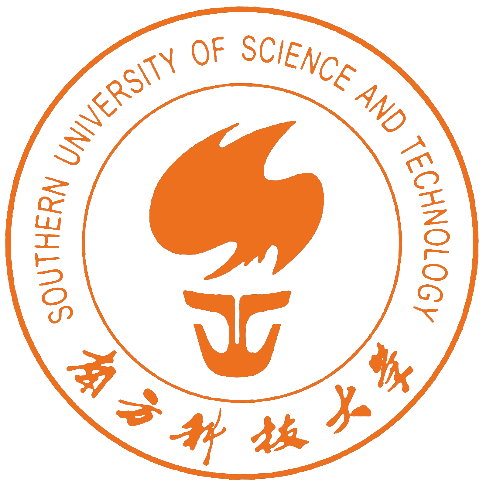

Wanxing Wu 吴宛幸
M.S. @ Institut Polytechnique de Paris
About
I am Wanxing Wu (吴宛幸) (CV), an M.S. student in Computer Science (DS4Health) at Institut Polytechnique de Paris (IP Paris). I received my B.S. in Data Science and Big Data Technology from the

Southern University of Science and Technology (SUSTech). I am currently a Research Assistant at SUSTech-NLP, advised by Prof. Guanhua Chen.My research interests broadly lie in efficient LLM systems and agentic AI. I have worked on LLM–SLM model collaboration for efficient routing and inference, and I am currently working on efficient agentic exploration for test-time adaptation. I am also interested in LLM for health, as an application domain where low-resource constraints and trustworthiness are both critical.
Education
-
Institut Polytechnique de Paris Sep 2025 – May 2028M.S. in Computer Science (DS4Health)
-
Southern University of Science and Technology Sep 2021 – Jul 2025B.S. in Data Science and Big Data Technology
Publications
-
Can Weak Models Explore? Scope Then Cover for LLM Agent Adaptation Under review
-
Cross-lingual Multi-view On-Policy Self-Distillation: Distilling Multilingual Views into a Single Target-Language Policy Under review
-
Towards Fair Evaluation of Routers in Collaborative LLM Systems Under Review
Research
-
SUSTech-NLP · Research Assistant
Jan 2025 – Present · Shenzhen, China- LLM–SLM Collaboration: Proposed RouterXBench to decouple router ability from scenario alignment; systematically compared routing signals and showed that internal hidden states capture model uncertainty more effectively than output logits or external embeddings, leading to ProbeDirichlet with learnable Dirichlet aggregation across layers.
Internship
-
Institute of Intelligent Medical Research (IIMR), BGI · Machine Learning Intern
Jul 2024 – Jan 2025 · Shenzhen, China- Developed cfDNA-based feature representations via statistical filtering and model-guided selection; applied ensemble learning for early colorectal cancer detection, achieving 94.88% sensitivity.
-
Peking University Shenzhen Hospital · Data Analyst Intern
Jul 2023 – Oct 2023 · Shenzhen, China- Performed biostatistical analysis on multi-timepoint clinical records to compare postoperative outcomes across surgical methods.
Academic Projects
-
ReflexSQL: A Self-Reflective Agent for Robust Text-to-SQL Generation Poster
Dec 2025 – Jan 2026- Built an execution-aware self-reflection framework for enterprise-scale Text-to-SQL, combining candidate voting, execution feedback, and memory-augmented exploration on Spider 2.0-Lite.
-
Conservative Off-Policy Trust Region Policy Optimization
Nov 2025 – Jan 2026- Developed a dimension-wise masking strategy for off-policy TRPO that leverages on-policy gradient alignment to suppress conflicting update components, ensuring update directions remain consistent with the on-policy objective; validated on PyBullet/Gym locomotion tasks.
Honors & Awards
- Outstanding Graduate, Zhiren College, SUSTech (Jul 2025)
- Outstanding Graduation Thesis, Top 5%, SUSTech (Jul 2025)
- Outstanding Student Scholarship, SUSTech (Oct 2024)
- MCM/ICM Mathematical Contest in Modeling, Honorable Mention (Feb 2024)
Technical Skills
- LLM: inference pipeline (vLLM, SGLang), agentic-RL workflows, SFT/RL training, model evaluation
- Programming & Dev: Python, PyTorch, Docker, Linux, Git, shell scripting
Language Skills
- English: IELTS 6.5, CET-4, CET-6
- Chinese: Native
Blog
Notes on my research. Three posts are in preparation.
- In preparation
Scope-then-Cover
Agent exploration and learning from experience
- In preparation
CMOPD
Bringing complementary reasoning views into one policy
- In preparation
RouterXBench
Evaluating model routing under a cloud budget